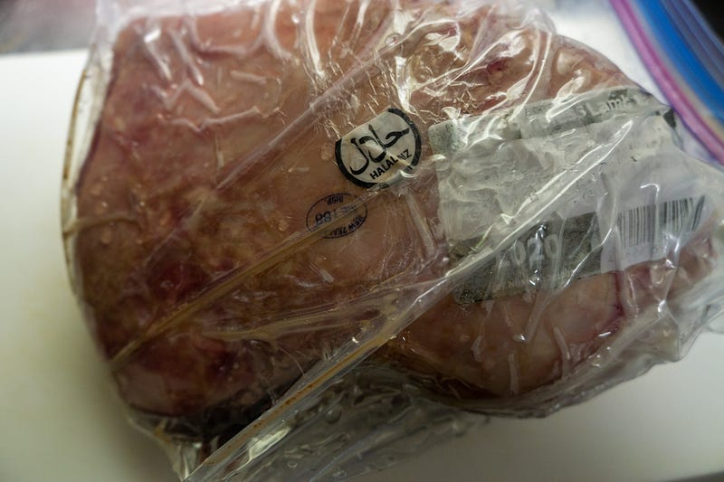
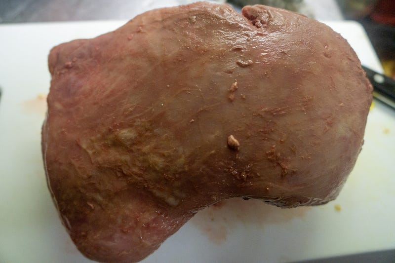
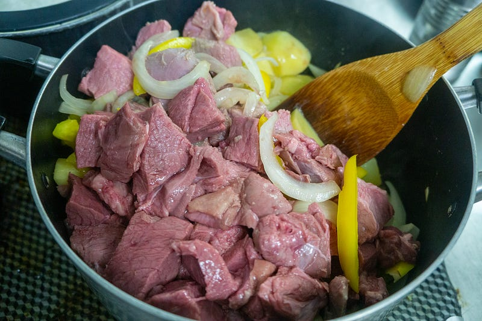
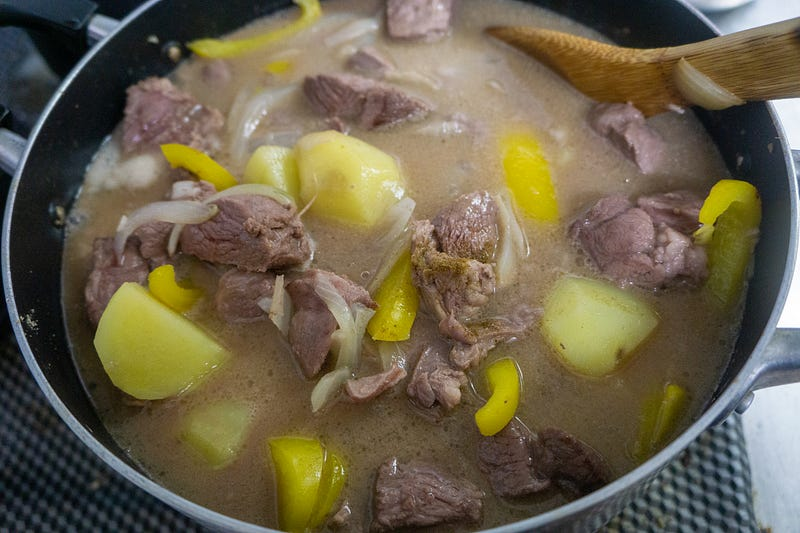
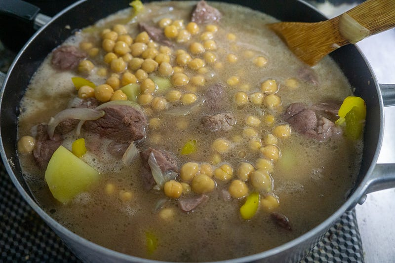
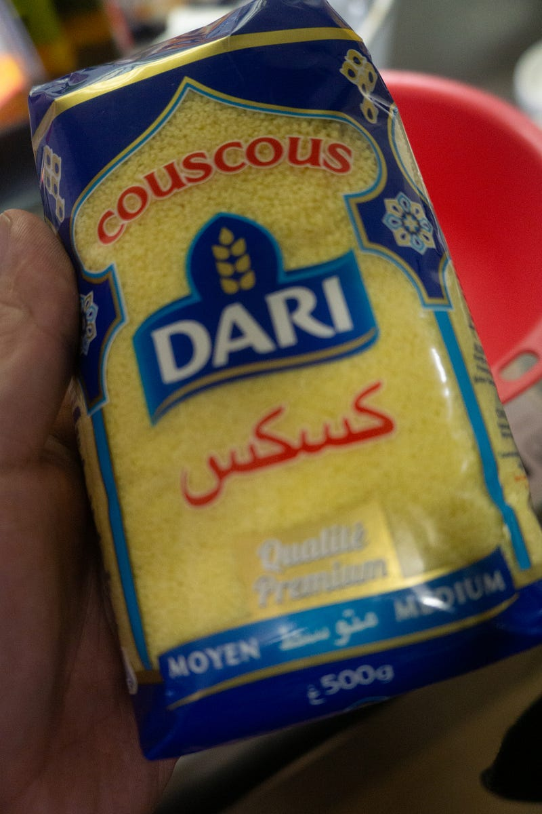
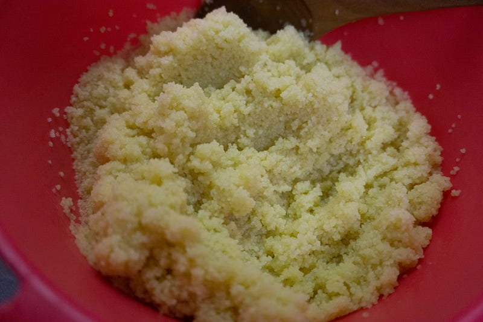
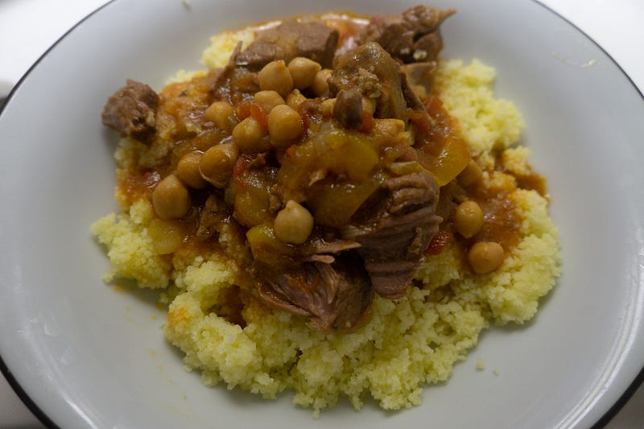

クスクスのサリードかけ
クスクスのサリードかけ
2週間ほど前に妻が「クスクスとラムの煮込み」とかいう（うろ覚え）ものをデパ地下で買ってきたのだが、どうにもお上品すぎて不満だったので、自分で作ってリベンジすることにした。
「お上品すぎる」というのは、ラムの煮込みのはずなのにラムの臭み消しをしすぎててもはや何肉を食べているのかわからないというのと、あとは全体的におとなしい〜〜〜〜感じの味だったのでもっとガツンと来るエスニック料理を食べたかった、ということにつきる。
幸い（？）普段からラム肉はキロ単位で扱ってるし、すでに一回サリード(Tharid）もどきは作った事がある。
From Wikipedia, the free encyclopedia Tharid ( Arabic: ثريد) is a traditional Arab dish made from pieces of bread in a…en.wikipedia.org
サリードというのは調べていくとどうもトルコのクルファスリエとかみたいな、一般家庭のおかんの味、みたいな食べ物だという印象。しかし同時に予言者ムハマドにより最もおいしいとされている… とかなんとか。
そして再度レシピを何個か検証してみると「香辛料を油で炒める… タマネギを炒める… ジャガイモを炒める… 好みで豆を入れる… 肉を炒める… 煮る」みたいな大雑把な流れが見えてきた。はは〜つまりカレーだな？
そうと分かれば、だいたい味の正解もわかる。
ではラム肉から始めましょう。

はい。ラムレッグ1.6kgを6時間ほど56.5℃で低温調理しました。もちろん普通に煮込んでもいいんですけど、やっぱりこっちの方が柔らかい気がするんだよな。もちろん圧力鍋があればそっちでもいいんですが。

恒例の一瞬なんだかわからない「低温調理終了直後の肉」。

具材はニンニク（たっぷり）、タマネギ、ジャガイモ、パプリカ、それにガルバンゾービーンズです。香辛料はカルダモン、クミンをわりと多め。
タマネギに火が通るくらいまでさくっと炒めます。

水を入れるとドブ汁みたいですね。カレーの要領で煮ていきます。

豆を入れてもまだドブ汁。
このあとトマトを入れたりするのですが、その前に一旦このあたりで大枠の味付けをします。といっても僕は基本的に肉の出汁、油、コンソメ、塩くらいしかいつも使わないのですが。ある程度煮詰まるのでこの時点ではコンソメと塩で薄目のスープにしておきます。
お好きなところまでコトコト煮て、良きところでトマトを入れます。僕がトマトを後で入れるのは、どうも酸味のせいかトマトが入ると僕が味付けを濃くしてしまう癖があるからです。
トマトを入れてドブ汁感を無くしたらあとはお好きなところまで煮詰めたり味の調整をしましょう。でもパプリカ、クミン、カルダモンが入ってればこの時点ですでに大分中東感でてるはずです。
次にクスクス。クスクスはとにかく水気を吸うので、その分汁物に合う。ですが、クスクスはとにかく量が増えるので要注意。

だいたい500gで売ってるけど、これ、小食の人だったら10食分くらいになると思う。
クスクスはまずオリーブオイルをまとわせてから、熱湯をかけていく。

これはクスクス300gにお湯をかけてしばらくまぜた後。オリーブオイルとお湯はしっかりかけましょう。オイルはちゃんと全体に行き渡るまで。お湯はまぜたあと、味見して一瞬「水っぽいかな？」と思うくらい。倍々ゲームでどんどん増えます。
なお300gという量は明らかに多かった。うちの場合は200g弱で十分だったので、残りは明日食べる…
クスクスがやわらかくなったら、バター（！）を入れてレンジで軽くチン。
そこに熱々のサリードをかけます。

するとあーら、おいしい。クスクスのサリードがけ。子供達もパクパク食べてくれましたが、唯一でた文句が「クスクスが多い」でしたw
インド〜中東系のあの味が好きな人にはたまらないと思います。
ちなみにこの写真は見栄えのためにこれくらいにしたけど、これだと水分が足りない。もっとドバドバ汁があったほうがクスクスがおいしいです。汁はたっぷり用意しましょう！